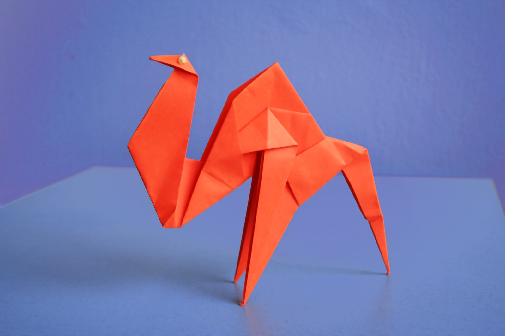
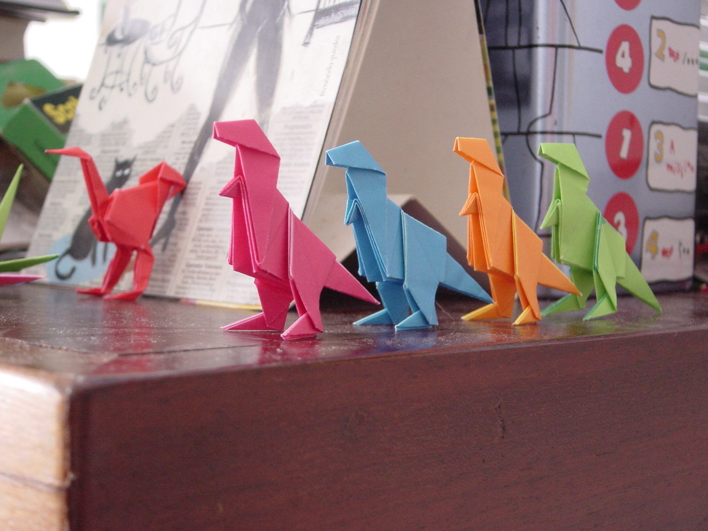

Origami Designs
About Us
Follow Us
Click on the images to find hout how to make these animals!

Interesting Facts About Camels:
- Camels have thick lips which let them forage for thorny plants other animals can't eat.
- Camels have three sets of eyelids and two rows of eyelashes to keep sand out of their eyes.
- There are two types of camels: One humped or “dromedary” camels and two humped Bactrian camels.

Interesting Facts About Dinosaurs:
- Dinosaur fossils have been found on all seven continents.
- Modern birds are a kind of dinosaur because they share a common ancestor with non-avian dinosaurs.
- In 1842, the English naturalist Sir Richard Owen coined the term Dinosauria, derived from the Greek deinos, meaning “fearfully great,” and sauros, meaning “lizard.”